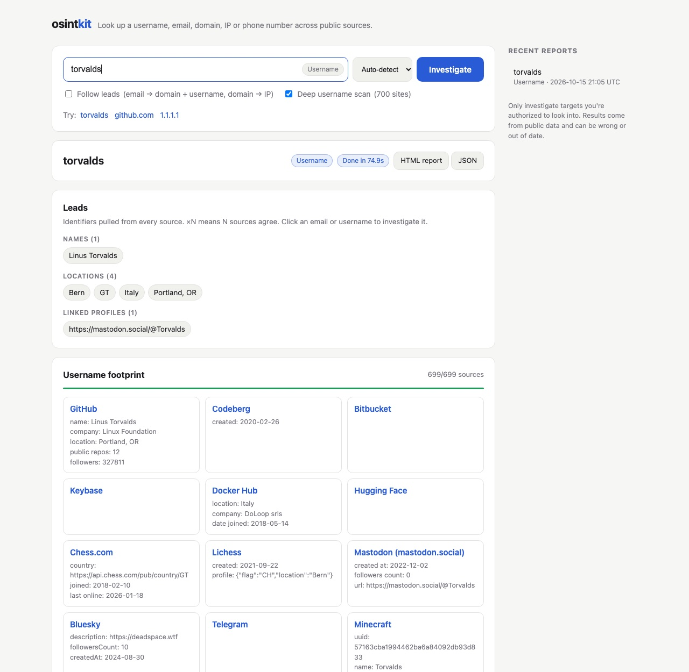

osintkit takes a username, email, domain, IP or phone number and checks it against about 700 sites and dozens of public intelligence sources at the same time. It then combines everything into one report and lists the leads worth following up.

The tool works out what kind of target you typed and runs every relevant source for it. Results stream in live as each source answers.
The full WhatsMyName dataset plus direct API checks for GitHub, GitLab, Keybase, Mastodon, Bluesky and more. A deep GitHub profile pulls commit emails, real names, organizations and keys. Each hit is checked against a random control name to weed out false positives.
Mail provider, SPF and DMARC records, and a disposable-address check. Data breaches with what each one exposed, a Gravatar profile with its verified accounts, and GitHub commits made with the address.
WHOIS, DNS and the security certificate. Subdomains from certificate logs, with a check of which are live. Archive history, past urlscan.io scans, the site's tech stack, and social links and analytics IDs on the homepage.
Location and ISP, owner, open ports and known vulnerabilities, threat reports, the abuse contact, Tor exit status, and the other domains hosted on the same IP.
Whether the number is valid, plus its region, original carrier, line type and time zones from Google's libphonenumber. Numverify adds more if you have a key.
Every email, username, name, location and profile found by any source is collected in one place, with a count of how many sources agree. Click a lead to investigate it next. Each report also has ready-made links to the tools that need a browser.
You need Python 3.9 or newer. Everything else is optional. osintkit runs on your own computer, so your searches go straight to the sources and never pass through anyone else's server.
# get the code git clone https://github.com/evjohnston/osint.git cd osint # opens http://127.0.0.1:8000 python3 web.py
python3 osint.py torvalds
python3 osint.py someone@example.com -p
python3 osint.py example.com -p
python3 osint.py 8.8.8.8
python3 osint.py torvalds --quick # 30 sites, fast
For phone lookups, first run pip install phonenumbers. Every search is saved as an HTML report and a JSON file in reports/.
Every source in the list above works without an account. Copy .env.example to .env and add any of these keys to unlock more data.
| Key | Cost | What it adds |
|---|---|---|
GITHUB_TOKEN | Free | Raises GitHub's limit from 60 to 5,000 lookups an hour, which keeps the deep GitHub profile working |
OTX_API_KEY | Free | A domain's DNS history, which can reveal old servers and hidden subdomains |
HUNTER_API_KEY | Free tier | Staff email addresses for a domain, and a check that an inbox exists |
SHODAN_API_KEY | Free tier | Full details of the services running on an IP |
VT_API_KEY | Free | Whether VirusTotal flags a domain or IP as malicious |
ABUSEIPDB_API_KEY | Free | Abuse reports filed against an IP |
HIBP_API_KEY | Paid | Breach results from Have I Been Pwned |
Only investigate people and organizations you're authorized to look into. That includes yourself, your own organization, a scoped penetration test or red-team engagement, a CTF, or legitimate research and journalism. Breach records and identity details are personal data, and privacy laws such as GDPR and CCPA may apply to how you collect and keep them.
Results come from public sources and can be stale, wrong or about a different person with the same name. Verify a lead before you act on it.